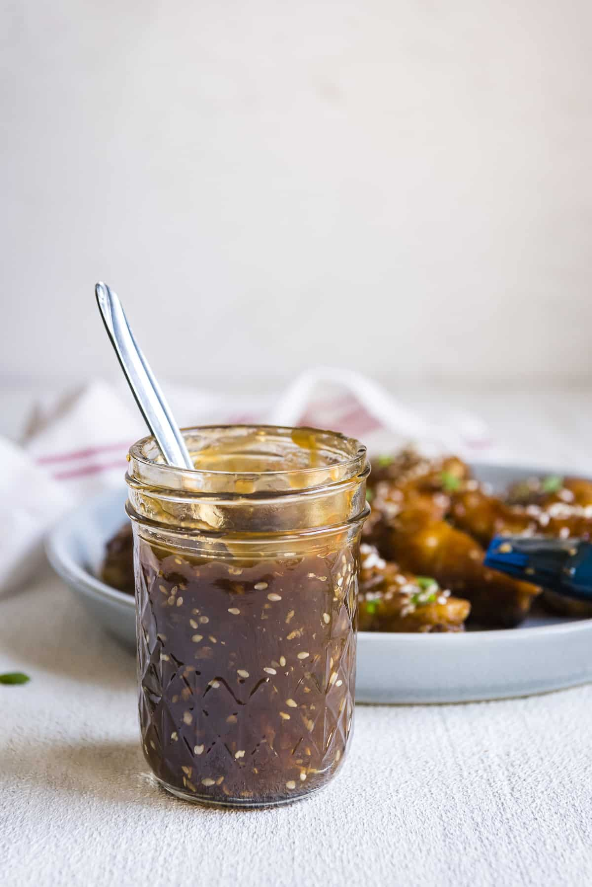

Homepage
Teriyaki Sauce!

Description
This is a versatile sauce that can be used with any meat and vegetables. Good for meal prep.
Ingredients
- 1 cup Sake
- 1 cup Mirin
- 1 cup Soy Sauce
- 1 tbsp Cooking Oil
Optional Condiments
- 2 cloves Garlic
- 1 Ginger
- 1 tbsp Sesame Seeds
- Paparika
Steps
- Heat up saucepot with a low-medium heat
- Add oil into pan once heated
- Place garlic and ginger along with any other condiments into the saucepot
Bloom the aromatics in the oil - best carrier of aromatic flavour
- Stir condiments for ~3 min, eavenly distributing heat and prevent burning
- Add in the sake, mirin, and soy sauce in equal parts (1:1:1 ratio)
- Turn the heat up to a gentle simmer (small bubbles), let the alcohol cook off and intensify flavour
- Add sugar/honey if sauce is not sweet
- If sauce is not thick, create a cornstarch slurry and mix into the teriyaki mixture
- Mix a 2:1 ratio of water to cornstarch
- Mix until mixture is smooth
- Add in sesame seeds and mix and stir until evenly distributed
- Pour mixture into a sealed jar to use on your favourite meat and veges!